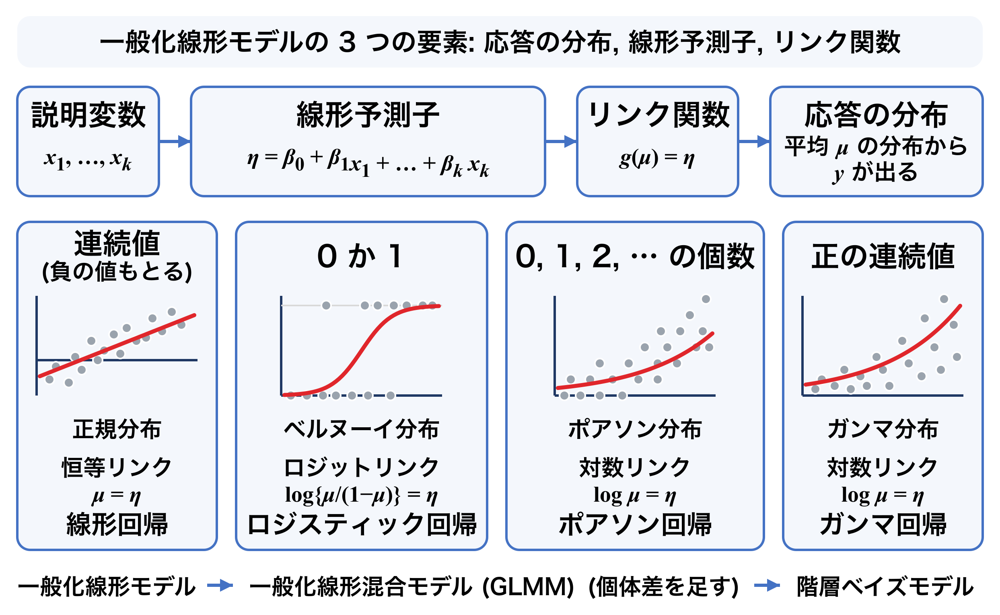

一般化線形モデルの全体像
一般化線形モデルの 3 つの要素のうち, 線形予測子は目的変数の種類によらず同じ形です. 目的変数に合わせて選ぶのは, 応答の分布とリンク関数の組です. 久保 (2012, p. 34) は, 分布を選ぶときにデータで確かめる点として, 説明したい量が離散か連続か, 値の範囲, 標本分散と標本平均の関係の 3 つを挙げています. 例えば, 欠席回数は離散 (0 以上の整数) で上限が決まっておらず, 通学時間は連続で 0 より大きい値だけをとります.
次の図は, 3 つの要素の関係と, 目的変数の種類ごとに選ぶ分布とリンク関数を並べた模式図です. 下段の 4 つの小さな図は, 説明変数と平均の関係の形 (赤の線) と観測値の散らばり方 (灰色の点) を描いたもので, 実データではありません.

図に挙げた組と, 個数のばらつきが大きいときに使う負の二項分布をまとめると, 次の表になります. 表は, 久保 (2012) の分布の一覧 [p. 34] と, 分布ごとによく使うリンク関数の表 [表 6.1, p. 114] をもとに, 目的変数の例と呼び名を本稿で加えたものです.
| 目的変数の例 | 値の種類と範囲 | 応答の分布 | 分散と平均の関係 | よく使うリンク関数 | 呼び名 |
|---|---|---|---|---|---|
| テストの点数の前回との差 | 連続値. 負の値もとる | 正規分布 | 分散は平均と関係なく決まる | 恒等 g(\mu)=\mu | 線形回帰 |
| 単位を取得したか (n 回のうちの成功回数) | 0 か 1 (0 から n の整数) | 二項分布 (n=1 のときはベルヌーイ分布) | 分散は平均で決まる | ロジット g(p)=\log\{p/(1-p)\} (p は成功の確率) | ロジスティック回帰 |
| 1 学期の欠席回数 | 0 以上の整数. 上限は決まっていない | ポアソン分布 | 分散は平均に等しい | 対数 g(\mu)=\log\mu | ポアソン回帰 |
| 欠席回数で, ばらつきがポアソン分布より大きいとき | 0 以上の整数 | 負の二項分布 | 分散は平均より大きい | 対数 | 負の二項回帰 |
| 通学時間 | 正の連続値 | ガンマ分布 | 平均が大きいほど分散も大きい | 対数 | ガンマ回帰 |
表のどの行でも線形予測子は同じ形で, 応答の分布とリンク関数が異なります. 例えば, 勉強時間 x_{i1} とアルバイト時間 x_{i2} を説明変数にすると, ロジスティック回帰と線形回帰はどちらも線形予測子 \beta_0+\beta_1x_{i1}+\beta_2x_{i2} を使います. 前者はベルヌーイ分布とロジット, 後者は正規分布と恒等リンクを使います.
正準リンク関数
分布ごとに, 推定の計算で扱いやすいリンク関数が 1 つ決まっていて, 正準リンク関数と呼ばれます. 久保 (2012, pp. 48, 114) によると, 二項分布ではロジット, ポアソン分布では対数, 正規分布では恒等が正準リンク関数で, 表のリンク関数もこれに一致します. ガンマ分布の正準リンク関数は逆数 g(\mu)=1/\mu ですが, 同書は対数リンクほど使いやすくないとして, よく使うリンク関数に対数を挙げています.
対数リンクと掛け算で表れる効果
ポアソン回帰, 負の二項回帰, ガンマ回帰で使う対数リンクでは, 平均は線形予測子を指数関数に通した値です.
\mu_i=\exp(\beta_0+\beta_1x_{i1}+\beta_2x_{i2}) =\exp(\beta_0)\times\exp(\beta_1x_{i1})\times\exp(\beta_2x_{i2}).
指数関数の値は正なので, 係数がどんな値でも平均は 0 より大きくなります. x_{i2} が同じで x_{i1} だけが 1 大きい観測を比べると, 平均は \exp(\beta_1) 倍になります. 線形回帰の係数が平均の差を表すのに対し, 対数リンクの係数は平均の比を表します. 久保 (2012, pp. 48, 58–60) は, 植物の体の大きさが 1 増えると種子数の平均が約 1.08 倍になる例で, 対数リンクでは要因の効果が掛け算で平均に及ぶことを示しています. 同じデータに恒等リンクを使うと, 効果は足し算になり, 平均が負になりうる別のモデルになることも示しています. ロジスティック回帰では, 同じ読み方がオッズについて成り立ちます. 読み方はロジスティック回帰の係数とオッズ比で扱います.
目的変数を対数変換してから線形回帰を当てはめることは, 対数リンクの一般化線形モデルとは別のモデルです (久保, 2012, pp. 63, 114–115). 対数変換した線形回帰は \log Y の平均を一次式で表し, 対数リンクは Y の平均の対数を一次式で表します. 個数のように 0 をとる目的変数は, 対数変換そのものができません.
割合を目的変数にしないためのオフセット項
調べた面積や時間の長さ A_i が観測ごとに違うとき, 個数 y_i を A_i で割った密度を目的変数にしたくなります. 久保 (2012, pp. 130–131) は, このような割り算の値を使うと, 1000 打数 300 安打と 10 打数 3 安打を同じ 3 割として扱うように情報が失われ, 割り算の値がどの分布に従うかも分からなくなると述べています. 代わりに, 平均の個数を面積と単位面積あたりの平均の積で表します (久保, 2012, pp. 132–133).
\mu_i=A_i\exp(\beta_0+\beta_1x_i)=\exp(\beta_0+\beta_1x_i+\log A_i).
この式は対数リンクのポアソン回帰で, 線形予測子に係数の付かない項 \log A_i が加わります. この項をオフセット項と呼びます.
一般化線形モデルで表せないばらつき
一般化線形モデルでは, 説明変数の値が同じ観測は同じ分布に従うと考えます. 久保 (2012, pp. 148–151) は, 二項分布で期待されるより大きなばらつきを過分散と呼び, その原因を, データとして測っていない個体差に求めています. 同書は, 個体ごとの差 r_i を線形予測子に加え, r_i が平均 0 の正規分布に従うとしたモデルを一般化線形混合モデル (GLMM) として説明しています (久保, 2012, pp. 151–152). また, 線形モデルから一般化線形モデル, 一般化線形混合モデル, 階層ベイズモデルへと順に拡張する道筋を示しています (久保, 2012, p. 6). 学生ごとの差を加えたモデルの例は, 過分散と個体差と個体差のモデリングにあります.
全体像の表のうち, 次の節では 0 か 1 の目的変数に使うロジスティック回帰を詳しく扱います. 架空の学生 200 人のデータで係数を推定する手順はロジスティック回帰分析にあります.